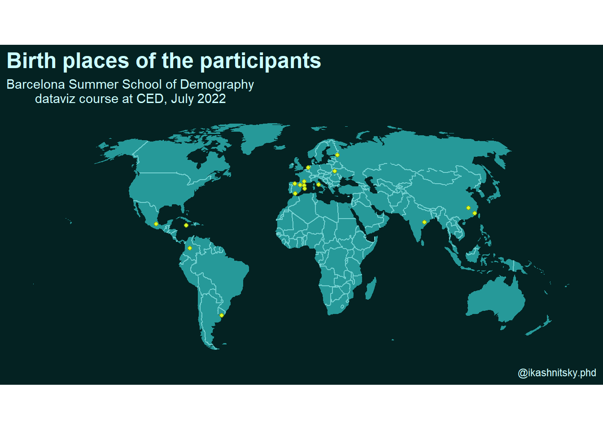

![]()
library(tidyverse)
library(sf)
# download the data
# https://stackoverflow.com/a/28986107/4638884
library(gsheet)
raw <- gsheet2tbl(
"https://docs.google.com/spreadsheets/d/1YlfLQc_aOOiTqaSGu5TI70OQy1ewTa_Ti0qAEOEcy58"
)
# clean a bit and join both fields in one text string
df <- raw |>
janitor::clean_names() |>
drop_na() |>
mutate(text_to_geocode = paste(city_settlement, country, sep = ", "))Deriving coordinates from a string of text that represents a physical location on Earth is a common geo data processing task. A usual use case would be an address question in a survey. There is a way to automate queries to a special GIS service so that it takes a text string as an input and returns the geographic coordinates. This used to be quite a challenging task since it required obtaining an API access to the GIS service like Google Maps. Things changed radically with the appearance of tidygeocoder that queries the free Open Street Map.
In this tiny example I’m using the birth places that students of my 2022 BSSD dataviz course kindly contributed. In the class I asked students to fill a Google Form consisting of just two fields – city and country of birth. The resulting small dataset is here
Now we are ready to unleash the power of tidygeocoder. The way the main unction in the package works is very similar to mutate – you just specify which column of the dataset contains the text string to geocode, and it return the geographic coordinates.
library(tidygeocoder)
df_geocoded <- df |>
geocode(text_to_geocode, method = "osm")The magic has already happened. The rest is just the routines to drop the points on the map. Yes, I am submitting this as my first 2023 entry to the #30DayMapChallenge =)
Next are several steps to plot countries of the worlds as the background map layer. Note that I’m using the trick of producing a separate lines layer for the country borders, there is a separate post about this small dataviz trick.
# get world map outline (you might need to install the package)
world_outline <- spData::world |>
st_as_sf()
# let's use a fancy projection
world_outline_robinson <- world_outline |>
st_transform(crs = "ESRI:54030")
country_borders <- world_outline_robinson |>
rmapshaper::ms_innerlines()Now everything is ready to map!
# map!
world_outline_robinson |>
filter(!iso_a2 == "AQ") |> # get rid of Antarctica
ggplot()+
geom_sf(fill = "#269999", color = NA)+
geom_sf(
data = country_borders, size = .25,
color = "#269999" |> prismatic::clr_lighten()
)+
geom_sf(
data = df_plot, fill = "#dafa26",
color = "#dafa26" |> prismatic::clr_darken(),
size = 1.5, shape = 21
)+
coord_sf(datum = NA)+
theme_minimal(base_family = "Atkinson Hyperlegible")+
labs(
title = "Birth places of the participants",
subtitle = "Barcelona Summer School of Demography
dataviz course at CED, July 2022",
caption = "@ikashnitsky.phd"
)+
theme(
text = element_text(color = "#ccffff"),
plot.background = element_rect(fill = "#042222", color = NA),
axis.text = element_blank(),
plot.title = element_text(face = 2, size = 18, color = "#ccffff")
)
That’s it. Going from text to point on the map has never been easier.
This post is one in the dataviz course series. Other posts: